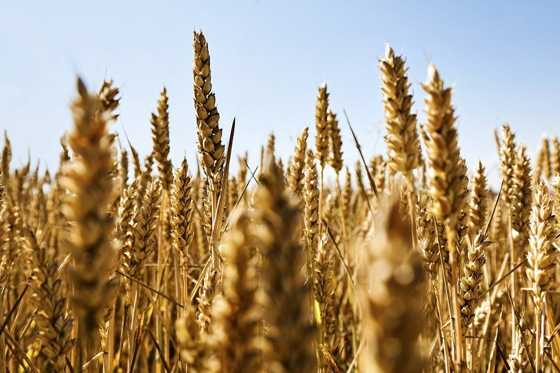
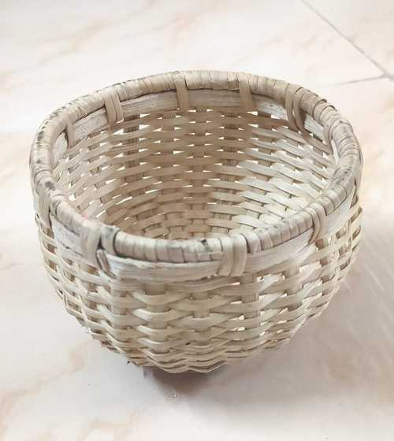
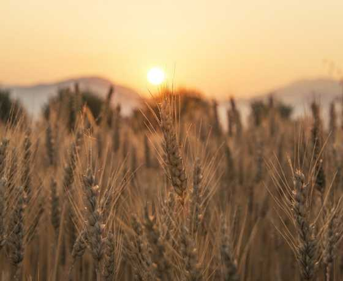
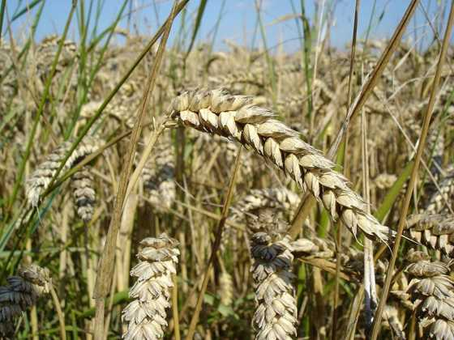
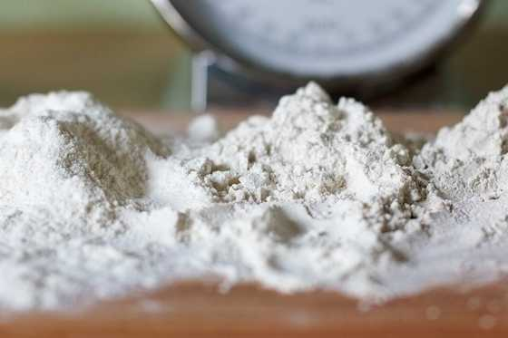
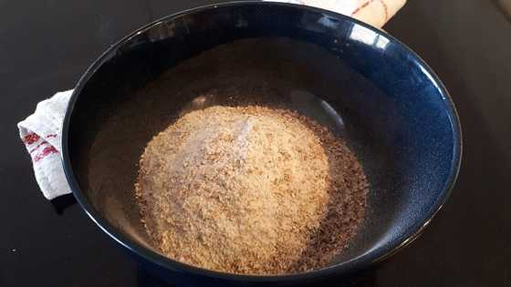
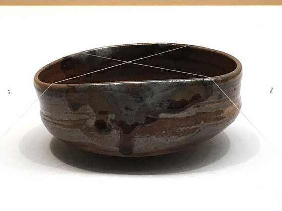
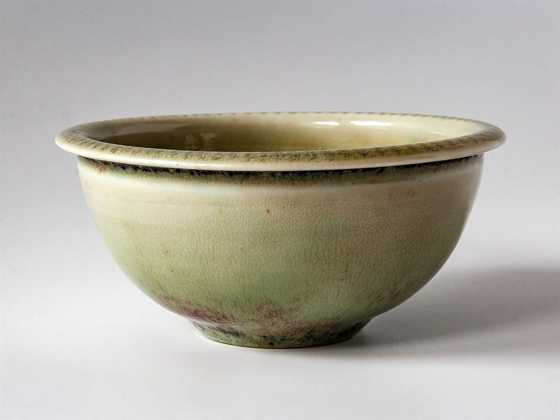
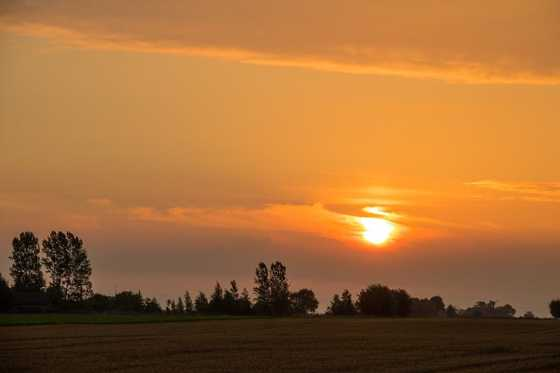

福岡県田川市日の出町 / KEIGETSU
町の小さなパン屋が、
毎日の食卓のそばにある。
渓月堂は、田川市にある地域密着型のパン屋さんです。粉と麦のぬくもりを、暮らしの近くへ。
掲載している写真はフリー素材のイメージで、店舗の実際の商品・店内・外観の様子ではありません。実際の写真はお店ご提供のものに差し替えます。
お店のこと
「地域密着型パン屋さん」という、まっすぐな肩書き。
渓月堂 KEIGETSU は、福岡県田川市日の出町にあるパン屋さんです。お店のInstagramのプロフィールには「田川市にある地域密着型パン屋さん」、キャッチコピーとして「町の小さなパン屋」と記されています。最寄りは田川伊田駅で、徒歩7分ほどとのことです。
投稿ではバゲットのほか、ババロア系のお菓子、タルト、パイなども紹介されています。
情報源: 渓月堂 Instagram
店名の意味・創業の経緯・オーナーさまの想いは、公開情報から確認できなかったため記載していません。このページの言い回し(見出しなど)は制作側のイメージです。





口コミ
こんな声が届きそうです(イメージ例)
以下は制作側が作った例文で、実在のお客様の声ではありません。
イメージ例
駅から歩いて寄れる距離で、仕事帰りにパンを選ぶのが楽しみになりそうです。
ご来店のお客様(例)イメージ例
町の小さなパン屋さんらしい、気取らない雰囲気で入りやすそうです。
ご来店のお客様(例)イメージ例
バゲットやタルトなど、いろいろ並んでいると迷ってしまいそうです。
ご来店のお客様(例)



アクセス
田川伊田駅から、歩いて7分ほど。
| 住所 | 〒825-0012 福岡県田川市日の出町10-12 |
|---|---|
| 最寄り駅 | 田川伊田駅から徒歩7分(Instagramの記載による) |
| 電話 | 準備中 |
| 営業時間・定休日 | 準備中 |
| @keigetsu_tagawa |